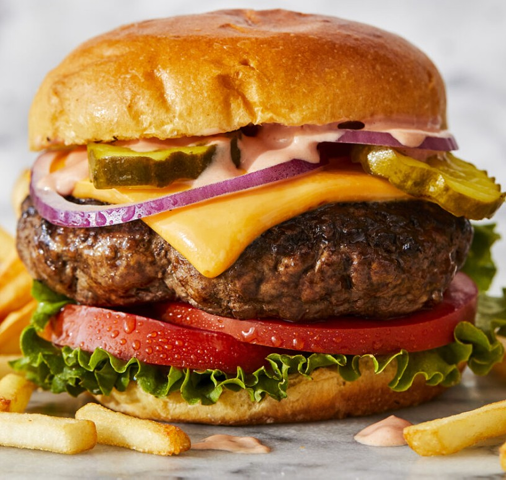
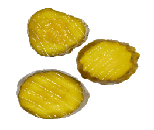

The target audience for these icons is app developers who want clean icons for the programs they are building.
Statistically, I am specifically targeting Millennials between the age of 27-34. This group is spread largely across North America 29.4%, Europe 29.7% and Asia 32.9%.
The majority of these developers are male (91.88%) with only around 5% identifying as female. Among other things, their interests include gaming, socializing and wellness.
Having consistently strong yet variable icons can improve the work that these images are ultimately used in. To that end, I want to communicate the idea of “harmony in difference” with this design. From the lines to the sizing to the colors, I have tried to create a set of icons that work well together yet let each icon stand on its own.
Where is makes sense, I repeated the same color e.g. tomato/ketchup/bacon. I also used variations of the same color e.g. reds in the tomato and purple in the onion in order to provide some variety.
The onion is purple, the lettuce and pickles (green), the bun, cheese and mustard (yellowish), the tomato, bacon and ketchup (red) and the burger (black).
When creating my design, I chose to focus on the single ingredients required to make a burger e.g. a slice of tomato rather than a whole tomato. I chose to design the icons from the top down in order to highlight the unique design that each element has e.g. triangles on the tomato, holes in the cheese, rings on the onion, grill marks on the burger, ridges on the pickles. I broke this rule for the bun for two reasons. 1. it looked better 2. I wanted it to stand out from the other ingredients since it is used to contain them all. I also chose not to contain the icons in a circle for example and instead made them all about the same size. For smaller elements like the pickles, I simple added more.
I used 3pt black stroke to outline each icon and highlight the detail.
Rings on the onions, lines on the burger, holes on the cheese, seeds on the bun, ridges on the pickles, triangles on the tomato. Straight lines on the pickles, burger, cheese, tomato. Circles on the onion, cheese, tomato. Depth (edge) on the burger, pickles, tomato. Size of the onion, burger, tomato. The internal lines on the burger, cheese, pickle and bun end in a rounded line. All but one icon is shown from the top down.
None of the lines are 100% vertical or horizontal. Even the bun has a slight tilt which brings a bit of motion and interest to the set.
I gave equal spacing to various elements in each icon e.g. space between the ridges in the pickle, space rings in the onion, space between char marks on the burger, space between triangles on the tomato. I also placed white space in the onion, bun, burger and cheese. Rings on the onion were closer on one side than the other to show growth.
I used colors that were analogous in each of the different icons. Two reds for the tomato, two greens for the pickle, two orange/browns for the bun, two yellows for the cheese, two blacks for the burger and three purples for the onion. Red tomato and green pickles complement each other as does the purple onion and yellow cheese. I took colors for the icons from the following image
 https://damndelicious.net/2022/08/12/the-best-ever-cheeseburger/ And, I took inspiration for the shape of the pickles from this image.
https://www.johnnygsubshack.com/product/pickles/28